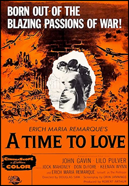
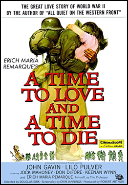
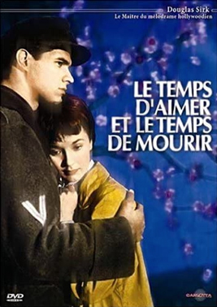

A Time To Love and A Time To Die
SYNOPSIS
Author Erich Maria Remarque met Sirk in 1954 and the director persuaded the writer to adapt his own novel for the screen. ("I found him an extraordinarily understanding and capable man", said Remarque. "He knew what he wanted to do with my book.")
Sirk's own son, actor Klaus Detlef Sierck (1925–1944), died in the Ukraine as a soldier of the Panzer-Grenadier-Division Großdeutschland when he was 18 years old.
Universal decided to cast two relative unknowns in the lead. As studio executive Al Daff said: "We could have put two well-known personalities in it and proceeded on the basis of making a star vehicle. Or we could, as we decided to do, cast the story for inevitability and put into the lead roles talented, fresh performers who would not have to overcome the handicap of personality identification and could be accepted as a young Nazi officer and his sweetheart."
Filming took place in West Berlin, which Sirk had fled over 20 years before and the US Army Europe training area at Grafenwöhr. Interiors were shot at CCC Film's Spandau Studios in Berlin. The film's sets were designed by the art directors Alexander Golitzen and Alfred Sweeney. Gavin was accompanied by his wife who he had just married and they used the movie as an opportunity to honeymoon. The musical score was composed by Miklós Rózsa on loanout from M-G-M, where he had been the primary composer for over a decade. Universal sent a screen test of Gavin to critics in advance of the film's release. Hedda Hopper saw a preview and predicted that Gavin will "take the public by storm and so will the picture, which should also put its co-star, Lilo Pulver in the top ten." Universal publicly claimed that the film cost $5 million but Universal president Milton Rackmil denied that they had ever spent that amount on a film.
Because of the film's uncommon compassionate portrayal of Germans during WW2 it was banned in Israel and the Soviet Union.


